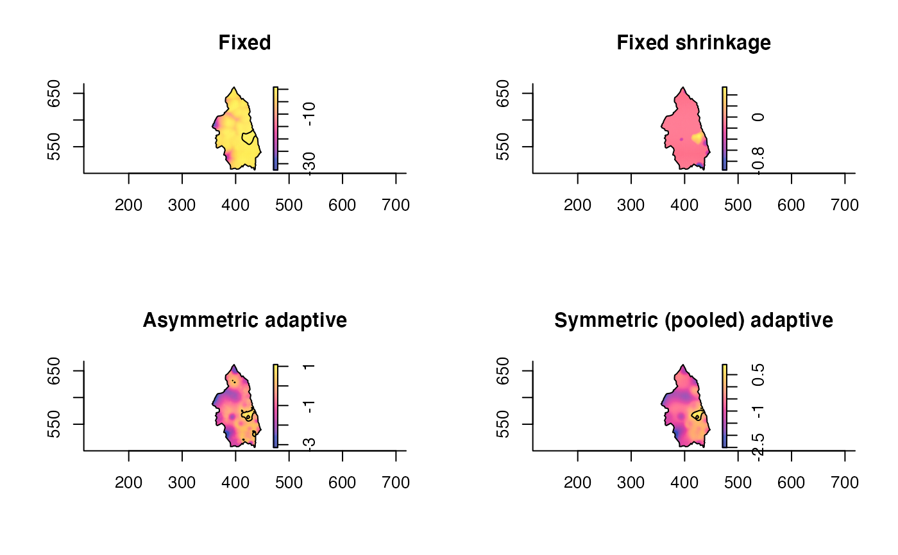

Estimates a relative risk function based on the ratio of two 2D kernel density estimates.
risk(f, g = NULL, log = TRUE, h0 = NULL, hp = h0, adapt = FALSE, tolerate = FALSE, doplot = FALSE, pilot.symmetry = c("none", "f", "g", "pooled"), epsilon = 0, verbose = TRUE, ...)
| f | Either a pre-calculated object of class |
|---|---|
| g | As for |
| log | Logical value indicating whether to return the (natural)
log-transformed relative risk function as recommended by Kelsall and Diggle
(1995a). Defaults to |
| h0 | A single positive numeric value or a vector of length 2 giving the
global bandwidth(s) to be used for case/control density estimates;
defaulting to a common oversmoothing bandwidth computed via |
| hp | A single numeric value or a vector of length 2 giving the pilot
bandwidth(s) to be used for fixed-bandwidth estimation of the pilot
densities for adaptive risk surfaces. Ignored if |
| adapt | A logical value indicating whether to employ adaptive smoothing
for internally estimating the densities. Ignored if |
| tolerate | A logical value indicating whether to internally calculate a corresponding asymptotic p-value surface (for tolerance contours) for the estimated relative risk function. See `Details'. |
| doplot | Logical. If |
| pilot.symmetry | A character string used to control the type of
symmetry, if any, to use for the bandwidth factors when computing an
adaptive relative risk surface. See `Details'. Ignored if |
| epsilon | A single non-negative numeric value used for optional scaling to produce additive constant to each density in the raw ratio (see `Details'). A zero value requests no additive constant (default). |
| verbose | Logical value indicating whether to print function progress during execution. |
| ... | Additional arguments passed to any internal calls of
|
An object of class "rrs". This is a named list with the
following components:
A pixel image of the
estimated risk surface.
An object of class bivden
used as the numerator or `case' density estimate.
An object of
class bivden used as the denominator or `control' density
estimate.
Only included if tolerate = TRUE. A pixel
image of the p-value surface for tolerance
contours; NULL otherwise.
The relative risk function is defined here as the ratio of the `case'
density to the `control' (Bithell, 1990; 1991). Using kernel density
estimation to model these densities (Diggle, 1985), we obtain a workable
estimate thereof. This function defines the risk function r in the
following fashion:
r = (fd + epsilon*max(gd))/(gd +
epsilon*max(gd)),
where fd and gd denote the case and
control density estimates respectively. Note the (optional) additive
constants defined by epsilon times the maximum of each of the
densities in the numerator and denominator respectively (see Bowman and
Azzalini, 1997).
The log-risk function rho, given by rho = log[r], is argued to be preferable in practice as it imparts a sense of symmetry in the way the case and control densities are treated (Kelsall and Diggle, 1995a;b). The option of log-transforming the returned risk function is therefore selected by default.
When computing adaptive relative risk functions, the user has the option of
obtaining a so-called symmetric estimate (Davies et al. 2016) via
pilot.symmetry. This amounts to choosing the same pilot density for
both case and control densities. By choosing "none" (default), the
result uses the case and control data separately for the fixed-bandwidth
pilots, providing the original asymmetric density-ratio of Davies and
Hazelton (2010). By selecting either of "f", "g", or
"pooled", the pilot density is calculated based on the case, control,
or pooled case/control data respectively (using hp[1] as the fixed
bandwidth). Davies et al. (2016) noted some beneficial practical behaviour
of the symmetric adaptive surface over the asymmetric.
If the user selects tolerate = TRUE, the function internally computes
asymptotic tolerance contours as per Hazelton and Davies (2009) and Davies
and Hazelton (2010). When adapt = FALSE, the reference density
estimate (argument ref.density in tolerance) is taken
to be the estimated control density. The returned pixel
image of p-values (see `Value') is
interpreted as an upper-tailed test i.e. smaller p-values represent
greater evidence in favour of significantly increased risk. For greater
control over calculation of tolerance contours, use tolerance.
Bithell, J.F. (1990), An application of density estimation to geographical epidemiology, Statistics in Medicine, 9, 691-701.
Bithell, J.F. (1991), Estimation of relative risk functions, Statistics in Medicine, 10, 1745-1751.
Bowman, A.W. and Azzalini A. (1997), Applied Smoothing Techniques for Data Analysis: The Kernel Approach with S-Plus Illustrations, Oxford University Press Inc., New York.
Davies, T.M. and Hazelton, M.L. (2010), Adaptive kernel estimation of spatial relative risk, Statistics in Medicine, 29(23) 2423-2437.
Davies, T.M., Jones, K. and Hazelton, M.L. (2016), Symmetric adaptive smoothing regimens for estimation of the spatial relative risk function, Computational Statistics & Data Analysis, 101, 12-28.
Diggle, P.J. (1985), A kernel method for smoothing point process data, Journal of the Royal Statistical Society Series C, 34(2), 138-147.
Hazelton, M.L. and Davies, T.M. (2009), Inference based on kernel estimates of the relative risk function in geographical epidemiology, Biometrical Journal, 51(1), 98-109.
Kelsall, J.E. and Diggle, P.J. (1995a), Kernel estimation of relative risk, Bernoulli, 1, 3-16.
Kelsall, J.E. and Diggle, P.J. (1995b), Non-parametric estimation of spatial variation in relative risk, Statistics in Medicine, 14, 2335-2342.
data(pbc) pbccas <- split(pbc)$case pbccon <- split(pbc)$control h0 <- OS(pbc,nstar="geometric") # Fixed pbcrr1 <- risk(pbccas,pbccon,h0=h0,tolerate=TRUE)#>#>#>#># Asymmetric adaptive pbcrr2 <- risk(pbccas,pbccon,h0=h0,adapt=TRUE,hp=c(OS(pbccas)/2,OS(pbccon)/2), tolerate=TRUE,davies.baddeley=0.05)#>#> #>#>#>#># Symmetric (pooled) adaptive pbcrr3 <- risk(pbccas,pbccon,h0=h0,adapt=TRUE,tolerate=TRUE,hp=OS(pbc)/2, pilot.symmetry="pooled",davies.baddeley=0.05)#>#> #>#>#>#># Symmetric (case) adaptive; from two existing 'bivden' objects f <- bivariate.density(pbccas,h0=h0,hp=2,adapt=TRUE,pilot.density=pbccas, edge="diggle",davies.baddeley=0.05,verbose=FALSE) g <- bivariate.density(pbccon,h0=h0,hp=2,adapt=TRUE,pilot.density=pbccas, edge="diggle",davies.baddeley=0.05,verbose=FALSE) pbcrr4 <- risk(f,g,tolerate=TRUE,verbose=FALSE) par(mfrow=c(2,2)) plot(pbcrr1,override.par=FALSE,main="Fixed") plot(pbcrr2,override.par=FALSE,main="Asymmetric adaptive") plot(pbcrr3,override.par=FALSE,main="Symmetric (pooled) adaptive") plot(pbcrr4,override.par=FALSE,main="Symmetric (case) adaptive")